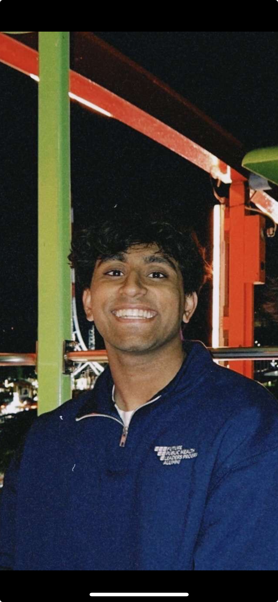

Param Patel
I'm from Canton, MI and I'm a junior studying Computer Science at the University of Michigan College of Engineering, and I'm part of the Engineering Global Leadership (EGL) honors program. I want to be an engineer because I care about taking what I learn and turning it into real impact. This past summer I was a Software Development Engineer Intern on the AWS Catalog team at Amazon in East Palo Alto, where I built testing systems that keep critical AWS services reliable. On campus I'm an Instructional Aide for ENGR 101, helping freshmen learn MATLAB and C++, and I've been a Michigan Orientation Leader. I also do consulting through NOBE (National Organization of Business and Engineering), a consulting club at UMich. I'm a Quantitative Analyst for Cantor Coding and Trading Club, and back home I'm a youth leader with BAPS, where I help plan events and teach younger kids. What I value most is trust, staying curious, and surrounding myself with people who push me to get better. Outside of all that, you can usually find me on a basketball or pickleball court.
At a Glance
- From: Canton, MI
- Education: B.S.E. Computer Science, University of Michigan (Expected May 2028), EGL Honors Program
- Minors: Economics, International Minor for Engineers
- Experience: AWS (SDE Intern, 2026), Dallas Tech (SWE Intern, 2025), BAPS Akshardham (SWE and Operations Intern, 2024)
- On Campus: ENGR 101 Instructional Aide, Orientation Leader, NOBE (National Organization of Business and Engineering), Cantor Coding and Trading Club
- Community: BAPS Youth Leader
- Interests: Basketball, pickleball, skiing, the outdoors